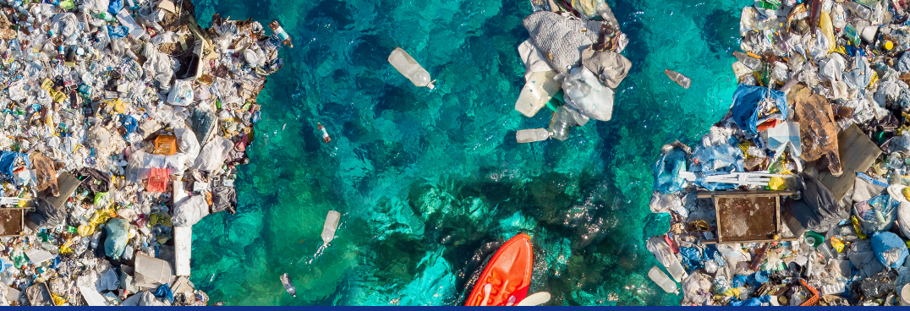
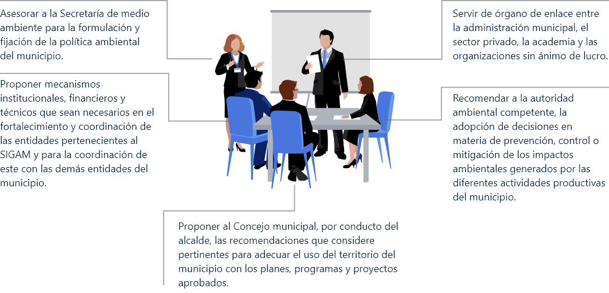
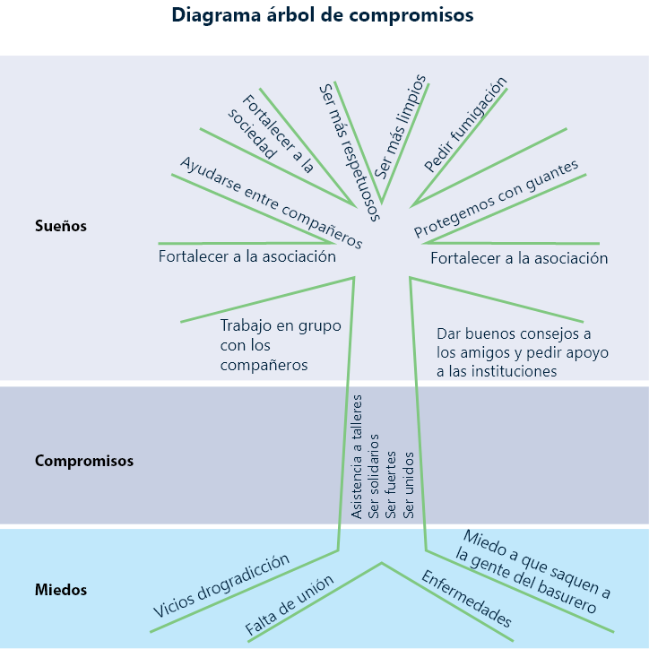
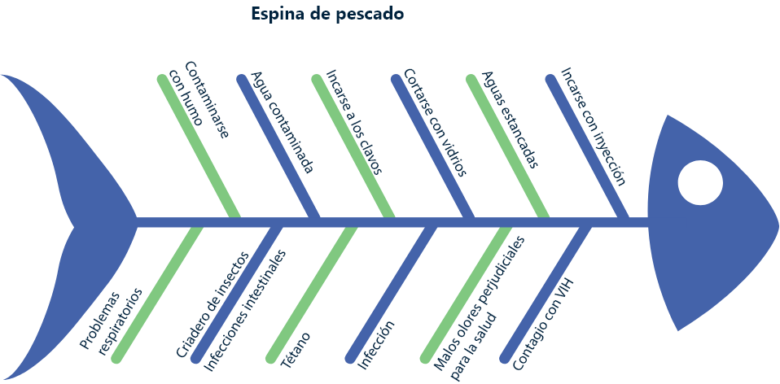

Introducción: Importancia de la promotoría ambiental como eje de cambio en la conducta
Teniendo en cuenta que la promotoría ambiental es un procedimiento que busca promover la participación ciudadana en procesos de planificación, gestión y seguimiento de las políticas, planes, programas y proyectos orientados hacia el desarrollo sostenible y la educación ambiental, lo invitamos a revisar la siguiente imagen:
Contaminación del río
Ahora por favor, analice estas preguntas:
1. Técnicas y metodologías
1.1 Educación ambiental
La educación ambiental es un proceso que vincula a un educador con un educando, se podría inferir de modo más sencillo, que la educación ambiental es:

1.2 Promotoría ambiental
De acuerdo con Maldonado, T. (2013), en su artículo “Promotoría ambiental”, describe este término como:
un instrumento estratégico para el desarrollo de una comunidad, que está orientado a provocar un cambio de actitud y a vencer las resistencias de la población hacia ese cambio. La base principal de las actividades de promoción es la participación organizada de la población, a partir de su cultura y sus condiciones socioeconómicas. La población es el sujeto y el protagonista de su propio crecimiento. La base de la promotoría es el trabajo organizado en torno a un objetivo común, apoyado en un proceso educativo que tiende al cambio de actitudes del individuo, la familia y el grupo social. Está siempre vinculada a un programa que persigue metas y objetivos establecidos, de acuerdo a las necesidades del contexto físico, ecológico, social, político, económico, histórico y cultural de la comunidad y la idiosincrasia de los individuos (p.4).
1.2.1 ¿Qué es un promotor ambiental?
De acuerdo con el Ministerio de Ambiente y Desarrollo Sostenible (s.f), el promotor ambiental es un líder con gran sensibilidad y responsabilidad social frente al desarrollo sostenible de su localidad y su región. Es una persona cuyo interés por la comunidad y por la solución de sus problemas sociales lo han constituido en un sujeto respetado y reconocido por la localidad en la que habita. Se destaca por su vocación de servicio, por su saber y conocimiento espontáneo, que le permiten dar respuestas y proponer fórmulas de encuentro para conciliar los intereses de distintos actores sociales.
1.2.2 ¿Cuáles son sus características?
Se fundamenta en la vida de las comunidades.
Los proyectos que se generen son propuestos y planificados por la población.
Las metodologías propuestas son acordes a las necesidades de la población.
Las actividades se realizan en la comunidad y con la población involucrada.
1.2.3 ¿Cuáles son las funciones de un promotor ambiental?
Para entidades como la Corporación Autónoma del Tolima (CORTOLIMA) (2009), algunas de las funciones de un promotor ambiental son:
Desarrollar de forma permanente procesos de educación y capacitación comunitaria.
Promover la articulación de las organizaciones sociales a los procesos de planificación, gestión y control del desarrollo socio-ambiental municipal.
Promover la realización y actualización de diagnósticos participativos para detectar los factores que originan los problemas socio-ambientales y planificar las acciones necesarias para su intervención.
Desarrollar el monitoreo socio-ambiental, a través del seguimiento al cumplimiento de la normatividad vigente y de la gestión institucional que se desarrolle en la comunidad.
Mediar en los conflictos socio-ambientales.
Exponer y difundir las Políticas nacionales.
Estimular el fortalecimiento de la capacidad organizativa de la comunidad.
Recepcionar las demandas y denuncias socio-ambientales de la comunidad.
Incentivar el desarrollo de proyectos socio-ambientales, gestionados a partir de las organizaciones comunitarias.
Promover la participación de la mujer en los procesos de planificación y la gestión socio-ambiental comunitaria.
1.2.4 ¿Cuáles podrían ser los ejes de investigación de la promotoría ambiental?
Aunque existe una gran variedad de temáticas para tratar dentro de las comunidades y para llevar a cabo diagnósticos y planes de acción, de acuerdo con Maldonado, T. (2013), en su artículo “Promotoría ambiental”, algunos de los temas más abordados son:
Estilos de vida y modelos de desarrollo.
Impacto ambiental originado por prácticas sociales.
Procesos productivos y uso de los recursos.
Manejo de residuos.
Hábitos de consumo.
Hábitos de convivencia respecto al ambiente.
Niveles de responsabilidad y posibilidad de acción.
Manejo del recurso hídrico.
1.3 Formas organizativas
Para mencionar las formas organizativas, se debe diferenciar la existencia de las mismas en dos ámbitos: comunidad y empresas.
1.3.1 Organizaciones comunitarias
Antes de hablar de organizaciones comunitarias, se debe definir el concepto de comunidad; este, como espacio en el que un grupo humano desarrolla su vida y las interacciones que en esta intervienen, por tanto, el concepto de comunidad puede referirse a un sistema de relaciones psicosociales, a un agrupamiento humano, al espacio geográfico o al uso de la lengua según determinados patrones o hábitos culturales (Causse, 2009, p.5).
De acuerdo con la Organización de las Naciones Unidas para la Agricultura y la Alimentación (FAO) (2008), en su documento “Organización comunitaria”, específica que la organización comunitaria se da cuando un grupo de personas se unen para ver los problemas que les afectan en su comunidad y le buscan soluciones. Los problemas pueden ser de carácter social, cultural, económico, político y productivo. La organización es la estructura que se da a un grupo de personas para funcionar de acuerdo a un método y a un objetivo común. Cuando varias personas deciden organizarse, lo hacen porque tienen intereses o problemas comunes que les exigen su unión para poder enfrentarlos (p.10).
Importancia de las organizaciones comunitarias.
La organización comunitaria es importante porque es ahí donde se da a conocer nuestros valores humanos y talentos individuales para resolver de forma efectiva los problemas sociales, económicos y políticos de la comunidad (FAO, 2008, p.11).
1.3.2 Formas organizativas empresariales
Existen múltiples explicaciones de las formas organizativas en las empresas, sin embargo, a manera general se puede contemplar que en una empresa existen como mínimo las siguientes partes fundamentales: el núcleo de operaciones, el ápice estratégico, la línea media, la tecnoestructura y el staff de apoyo (Gonzalez, M, y Codagnone, T, 2010, p.2).
Aunque pueden ser nombrados de otras formas, estos cinco procesos son los que normalmente conforman una estructura empresarial.
1.3.3 Responsabilidad social
La responsabilidad social es un atributo que puede ser dado a nivel comunitario o empresarial. Te invitamos a ver el siguiente vídeo, donde podrás ver diferentes definiciones y una contextualización más amplia desde la perspectiva empresarial.
De acuerdo a Barón (2014), la Responsabilidad Social Empresarial (RSE) surge en los años 20´s, pero toma fuerza en los 50´s y 60´s. Se inicia por la idea fundamental que si las empresas usan recursos naturales y sociales, el solo hecho de su uso genera un deber ético, por lo tanto, de alguna manera este uso se devolverá a la sociedad. Las empresas deben ser responsables, por consiguiente, deben ir más allá de la generación de trabajo y riqueza para los empresarios; deben velar por el bienestar de la comunidad donde se encuentran realizando sus actividades.
Otra definición se puede encontrar en la superintendencia de industria y comercio (2018) en su documento “ABD de La Responsabilidad Social (RS)”, el cual indica que la RS busca el actuar desde una perspectiva consciente de la actividad económica y de los efectos positivos y negativos que se causa tanto interna como externamente en el entorno. El desarrollo de la RS incluye la planeación de estrategias que apuntan al crecimiento de una empresa/pyme/organización, pero también al desarrollo de iniciativas con el ánimo de contribuir al desarrollo sostenible.
1.3.3.1 Categorías de aplicación de la responsabilidad social
Para facilitar el desarrollo de las estrategias de responsabilidad social, se deben contemplar las categorías en las cuales estas se desarrollan:
Categoría 1
Desarrollo económico: desde la perspectiva de Responsabilidad Social, se identifica en cómo está distribuido el capital en sus grupos de interés. Por ejemplo, nómina, pagos tributarios, gastos en infraestructura y comunidad, e inversiones en tecnologías o mejoras que beneficien el medio ambiente (Superintendencia de Industria y Comercio, 2018, p. 6).
Categoría 2
Desarrollo social: es el desarrollo del capital humano y social. Implica evolución o cambio positivo por medio de actividades que tienen como fin contribuir al mejoramiento de la vida (Superintendencia de Industria y Comercio, 2018, p. 7).

Categoría 3
Desarrollo ambiental: es la forma en que su organización o actividad intenta prevenir, mitigar y compensar el impacto directo o indirecto que su actividad genera en el medio ambiente (Superintendencia de Industria y Comercio, 2018, p. 8).
1.4 Técnicas y habilidades comunitarias
El trabajo con comunidad implica el uso de habilidades para lograr, no solo trabajar con las personas, sino también relacionarse con ese territorio y así lograr que el diagnóstico de las situaciones ambientales sea el reflejo más verídico de las condiciones actuales de esa organización u empresa.
1.4.1 Identificación de contexto y análisis del entorno
Este es el punto de partida, para el trabajo con comunidad se debe analizar e identificar tres factores elementales en territorio en el cual se va a trabajar:
Procesos históricos Actores La realidad del escenario local
Este análisis, de acuerdo a Parra y Vargas (2017), se realiza con el fin de asegurar que no se repliquen experiencias que ya se hayan probado en el pasado y que las acciones a adelantar no vayan a desconocer las realidades de los actores involucrados, ni las características y particularidades del entorno. Se precisa, entonces, reconocer que los espacios locales están inmersos dentro de realidades más amplias que tienen incidencia en su interior (p.166).
Para definir la palabra territorio, que es muy usada en promotoría y educación ambiental, se puede inferir que existen tres tipologías de territorio:
“Territorio natural”, que refiere a un recorte que solo reconoce los elementos de la naturaleza, sin que medie intervención humana.
“Territorio equipado o intervenido”, que refiere a uno en el cual el hombre ya ha instalado sistemas, por ejemplo, de transporte, infraestructuras y actividades productivas extractivas.
“Territorio organizado”, que implica un recorte que reconoce la existencia de actividades de mayor complejidad, por ejemplo, sistemas de asentamientos humanos y sus infraestructuras, pero que fundamentalmente refiere a la existencia de una comunidad que se reconoce y que tiene como auto referencia primaria el propio territorio y que está regulada mediante un dispositivo político-administrativo que define las competencias de ese territorio, su ubicación y el papel que tiene en el ordenamiento jurídico nacional, es decir, un territorio organizado tiene una estructura de administración y, en algunos casos, también de gobierno. Estos territorios pasan a ser sujetos de intervenciones promotoras del desarrollo (Boisier, citado en Parra y Vargas, 2017, p.166).
1.4.2 Formulación de un plan de acción participativo
Teniendo en cuenta los objetivos y necesidades comunes que pueden presentarse en esa comunidad o población, se inicia el proceso de planeación de la acción participativa, en donde se incentive toda la cooperación, participación e integración de los diferentes actores que han sido identificados. Además, incluye revisar cómo será la interrelación con otros actores involucrados, como empresas, actores locales, entidades, comunidades y grupos diferenciales.
De acuerdo con Parra y Vargas (2017), en este punto, el trabajo con comunidades supone el establecimiento de canales de comunicación para favorecer la socialización, el intercambio social, la interacción, el fomento de confianza, solidaridad y colaboración entre los actores intervinientes, en pro de favorecer acercamientos que fomenten inclusión y cohesión social (p.167).
Dentro de las acciones que van encaminadas al cumplimiento de esta habilidad comunitaria, se encuentra:
Diseño de planes de comunicación: su objetivo es mantener canales de comunicación con los actores involucrados.
Capacitación en mecanismos de participación, derechos y ciudadanía: el empoderamiento de las personas que lideren esa agrupación o población es elemental para que sean ejes de articulación entre las partes interesadas y favorezca el diagnóstico.
Apoyo y promoción de actores: siempre impulsar las acciones de participación.
1.4.3 Creación de redes de cooperación
La búsqueda de soluciones debe partir de la identificación de redes de cooperación existentes en esa comunidad, con el fin de llegar a la generación de capacidades de transformación de las condiciones socioeconómicas para reaccionar ante los desafíos externos y para promover aprendizaje social y la introducción de formas específicas de regulación social a nivel social y comunitario.
De acuerdo con Parra y Vargas (2017), la experiencia del trabajo con comunidades para el desarrollo local, estará fundamentada en la identificación y promoción de escenarios para el crecimiento de la capacidad productiva y organizativa local, a través de la conformación de redes de cooperación y el fortalecimiento y acompañamiento de las redes ya existentes. Por otra parte, deben ponerse en marcha acciones de gestión con autoridades para la apertura de opciones para el acceso al crédito, facilitación de servicios tecnológicos u otros que propendan por la solución de problemas comunes a los emprendedores locales, integrando activamente a la empresa privada (p.170).
1.4.4 Lograr la continuidad y permanencia del proceso
Es importante resaltar la necesidad de que los procesos realizados con comunidades sean continuos y permanentes en el tiempo, como lo indica Parra y Vargas (2017):
Desde la particularidad e integración de los actores, con miras al logro de los objetivos compartidos y mediante la disposición de recursos en el corto, mediano y largo plazo, el trabajo con comunidades debe partir de una metodología de planeación estratégica que permita la construcción de acciones colectivas frente a metas de largo plazo, sin perder de vista el involucramiento de las comunidades y la incorporación de sus opiniones en el análisis de la realidad.
El compromiso de los representantes del Estado, empresa y sociedad es vital para alcanzar la construcción de una interpretación compartida de los retos y de las oportunidades para el desarrollo y la cohesión social desde el entorno local; los escenarios de encuentro cotidiano son una alternativa viable para la movilización y dinamización de acciones desde los actores, pues, involucrándose a través de la asignación de responsabilidades y compromisos, se puede construir el engranaje necesario para dar respuesta a diversas problemáticas propias del territorio desde lo local y a identificar los recursos que deban ser requeridos desde el exterior (p.171).
2. Planes y programas
2.1 Normativa
De acuerdo con la Corporación Autónoma Regional del Valle del Cauca (CVC), en su Plan de gestión ambiental regional 2015 – 2036, la planificación ambiental en Colombia está definida constitucionalmente en el artículo 80 de la Constitución Política de Colombia, el cual establece que “el Estado planificará el manejo y aprovechamiento de los recursos naturales, para garantizar su desarrollo sostenible, su conservación, restauración o sustitución”. En desarrollo de las disposiciones Constitucionales, la planificación del desarrollo sostenible en general se ha regulado por tres leyes fundamentales: la Ley 99 de 1993, mediante la cual se define el marco de la planificación ambiental en el país; la Ley 152 de 1994, mediante la cual se establece el marco para la planificación del desarrollo; y la Ley 388 de 1997, mediante la cual se regula la planificación del desarrollo territorial.
Para la instrumentalización de la planificación ambiental, conforme a lo establecido en la Ley 99 de 1993, el Gobierno Nacional, a través del ahora denominado Ministerio de Ambiente y Desarrollo Sostenible, se encuentra el Decreto 1076 de mayo 26 de 2015, en el cual se compilan la norma que establece los instrumentos, criterios y elementos para la planificación ambiental en el país.
De acuerdo con el Establecimiento Público Ambiental (EPA) de la ciudad de Cartagena, el marco normativo de la educación ambiental está basado en:
Constitución Política de 1991
Establece el derecho a gozar de un ambiente sano y el deber de proteger la diversidad e integridad del ambiente (artículo 79), buscando formar al ciudadano para la protección del ambiente (artículo 67).
Ley 99 de 1993
Por la cual se crea el Ministerio de Medio Ambiente y se organiza el Sistema Nacional Ambiental (SINA).
Ley 115 de 1994
Se expide la Ley General de Educación. En su artículo 23 establece la educación ambiental como un área obligatoria y fundamental, necesaria para ofrecer en el currículo como parte del Proyecto Educativo Institucional (PEI), así como uno de los fines de la educación, tendiente a la adquisición de una cultura ecológica basada en la formación de una conciencia para la conservación, protección y mejoramiento del medio ambiente, de la calidad de vida y del uso racional de los recursos naturales, entre otros.
Decreto 1860 de 1994
Por el cual se reglamenta la Ley 115, incluyendo el PEI y los PRAES como ejes transversales de la Educación Formal.
Decreto 1743 de 1994
Institucionaliza el PEI en la Educación Formal, en todos los niveles.
Plan de Desarrollo Ambiental de 1997
Denominado “El salto social hacia el desarrollo humano sostenible”.
Decreto 309 del 2000
Reglamenta la investigación científica sobre diversidad biológica.
Política Nacional de Investigación Ambiental, 2001
Busca fortalecer la capacidad nacional y regional, que impulse la generación y utilización oportuna de conocimientos relevantes para el desarrollo sostenible.
Política Nacional de Educación Ambiental del 2002
Orienta los esfuerzos de las diferentes organizaciones y entidades, estableciendo los principios, estrategias y retos de la Educación Ambiental.
Ley 1549 del 2012
Fortalece la institucionalización de la política nacional de educación ambiental y su incorporación efectiva en el desarrollo territorial.
Decreto 1075 del 2015
Se expide el Decreto Único Reglamentario del sector educativo.
Acuerdo 407 de Julio-08 de 2015
Se establece un acuerdo marco entre el MEN y MADS. Alianza Nacional por “La formación de una ciudadanía responsable: un país más educado y una cultura ambiental sostenible para Colombia”.
Ley 1753 del 2015
Por la cual se establece el Plan de Desarrollo Nacional 2014 – 2018 “Todos por un Nuevo País, Paz, Equidad y Educación”, el cual dispone, en su capítulo VI, de directrices en materia de sostenibilidad ambiental.
Política Nacional de Educación Ambiental
De acuerdo con el entonces Ministerio del Medio Ambiente (MMA) y el Ministerio de Educación Nacional (MEN), en la Política Nacional de Educación Ambiental (SINA) se establece que desde 1991, Colombia ha venido desarrollando una propuesta nacional de Educación Ambiental, cuyos esfuerzos fundamentales han estado orientados a la inclusión de la temática, tanto en el sector ambiental como en el sector educativo específicamente. En el sector educativo, la educación ambiental se ha venido incluyendo como una de las estrategias importantes de las políticas, en el marco de la reforma educativa nacional y desde los conceptos de autonomía y descentralización. En el contexto anterior, se han logrado avances significativos en lo que tiene que ver con el proceso de institucionalización, tanto a nivel nacional como a nivel regional o local.
La política nacional de educación ambiental nace en el mandato constitucional de 1995 dentro del Plan Nacional de Desarrollo (PND) “Salto social”; allí se estableció que debe existir una política que ubique el desarrollo sostenible como una de las metas del desarrollo del país, y la educación ambiental como una de las estrategias primordiales para disminuir el deterioro del ambiente y contribuir al alcance de las metas del mencionado desarrollo.
En 1996, resultado del proceso de institucionalización de la educación ambiental impulsado por el programa, el Plan Decenal de Educación (1996 - 2005), en su Proyección Número 11, incorpora la educación ambiental como una perspectiva necesaria para contribuir en el mejoramiento de la calidad de vida del país.
La política nacional de educación ambiental se estructura mediante las siguientes temáticas:
1. Presentación: se establecen las instituciones que se hicieron presentes en la elaboración del documento y las fechas correspondientes.
2. Antecedentes y justificación: se hace un desarrollo de las políticas a nivel nacional e internacional para poder desarrollar un diagnóstico de la situación normativa del país.
3. Objetivos: se establecen los diferentes objetivos, tanto generales como específicos, para el desarrollo ambiental en el país.
4. Lineamientos conceptuales básicos y visión: se identifica la situación y la educación ambiental del país, se tienen en cuenta diferentes actores como las escuelas, las universidades, los investigadores y el Sistema Nacional Ambiental (SINA).
5. Principios que orientan la educación ambiental: se tienen en cuenta los individuos, sociedades, culturas y entornos a los cuales debe llegar la educación ambiental en el país y se establecen los principios para orientarla.
6. Estrategias y retos: se establecen las relaciones interinstitucionales con el fin de llevar a cabo las políticas planteadas, aquí se tienen en cuenta las relaciones, desde el individuo en su participación ciudadana, hasta los ministerios con las políticas nacionales.
7. Financiación: se establecen las estrategias económicas para llevar a cabo las políticas con instituciones locales, regionales, nacionales e internacionales.
8. Recomendaciones: todas las acciones necesarias para poder cumplir con las políticas establecidas.
Para conocer e identificar los componentes de la Política Nacional de Educación Ambiental (PNEA) te invitamos a conocerla:
Ministerio del Medio Ambiente (MMA) y Ministerio de Educación Nacional (MEN), 2002.
Política Nacional de Educación Ambiental SINA.
Lo invitamos a mirar el siguiente video que aborda de forma resumida la trazabilidad de la educación ambiental en Colombia.
2.2 Planes, programas y proyectos institucionales
Los planes, programas y proyectos institucionales son herramientas de navegación que se utilizan en el cumplimiento de objetivos ambientales específicos dentro de la institución, generalmente distribuidos por componente ambiental o por impacto ambiental.
2.2.1 PGAR
De acuerdo con el Decreto 1076 (2015), el Plan de Gestión Ambiental Regional es el instrumento de planificación estratégico de largo plazo de las Corporaciones Autónomas Regionales para el área de su jurisdicción, que permite orientar su gestión e integrar las acciones de todos los actores regionales, con el fin de lograr que el proceso de desarrollo avance hacia la sostenibilidad de las regiones.
El Plan de Gestión Ambiental Regional tendrá una vigencia de mínimo 10 años.
Las Corporaciones Autónomas Regionales tienen la responsabilidad de la formulación del PGAR, en coordinación con las entidades territoriales de su jurisdicción y los representantes de los diferentes sectores sociales y económicos de la región. El PGAR deberá ser aprobado por el Consejo Directivo de la respectiva Corporación.
La Política nacional de educación ambiental se compone de:
Antecedentes y justificación: establece el contexto por el cual es necesario establecer una Política nacional de educación ambiental, teniendo en cuenta el ámbito nacional e internacional.
Objetivos: se establecen, entre otros, la promoción, la concertación, planeación, ejecución y evaluación conjunta, a nivel intersectorial e interinstitucional, de planes, programas, proyectos y estrategias de Educación Ambiental formales, no formales e informales, a nivel nacional, regional y local.
Lineamientos conceptuales básicos: se establecen definiciones de aspectos a tratar y los diferentes principios que orientan la educación ambiental.
Componentes del PGAR
Para conocer e identificar los componentes de un Plan de Gestión Ambiental Regional, lo invitamos a consultar el PGAR de la Corporación Autónoma Regional del Valle del Cauca (CVC):
Corporación Autónoma Regional del Valle del Cauca (CVC). 2015.
Plan de Gestión Ambiental Regional 2015-2036.
2.2.2 PGIRS
El Decreto 2981 (2013) define el Plan de Gestión Integral de Residuos Sólidos como el instrumento de planeación municipal o regional que contiene un conjunto ordenado de objetivos, metas, programas, proyectos, actividades y recursos, definidos por uno o más entes territoriales para el manejo de los residuos sólidos, basado en la política de gestión integral de los mismos, el cual se ejecutará durante un período determinado, basándose en un diagnóstico inicial, en su proyección hacia el futuro y en un plan financiero viable que permita garantizar el mejoramiento continuo del manejo de residuos y la prestación del servicio de aseo a nivel municipal o regional, evaluado a través de la medición de resultados.
Componentes de un PGIRS
De acuerdo con la resolución 0754 (2014), el PGIRS debe estar compuesto por:
Organización para la formulación de los PGIRS: grupo interdisciplinario con experiencia en los aspectos técnico-operativos, sociales, ambientales, legales, financieros y administrativos en la gestión integral de residuos sólidos y del servicio público de aseo.
Línea base: sirve para establecer el estado actual de la gestión integral de residuos sólidos en el respectivo municipio, distrito o región.
Objetivos y metas: como mínimo se espera que los objetivos propuestos permitan cumplir los principios básicos para la prestación del servicio público de aseo y la gestión integral de los residuos sólidos.
Programas y proyectos para la implementación del PGIRS: alternativas de solución viable y sostenible, enfocadas en cada uno de los componentes del servicio, teniendo en cuenta los aspectos técnicos, operativos, ambientales, institucionales, económicos y financieros asociados.
Cronograma: indica las actividades generales y específicas de cada proyecto, el tiempo en el que se llevará a cabo y el responsable de cada actividad general y específica.
Plan financiero: es la guía para la asignación de recursos del municipio, distrito o región y garantizar la viabilidad de proyectos que se proponen.
Implementación, evaluación y seguimiento: identificación de avances y dificultades en la implementación del PGIRS, junto con la definición de todas las medidas correctivas a las que haya lugar.
Revisión y actualización: revisión realizada al inicio de cada periodo constitucional con el fin de realizar las mejoras técnicas correspondientes.
Para conocer e identificar los componentes de un Plan de Gestión Integral de Residuos Sólidos, lo invitamos a consultar el PGIRS de la ciudad de Bucaramanga:
2.2.3 PAT
El Plan Anual de Trabajo (PAT) es un documento de seguimiento a las actividades ambientales que se van a llevar a cabo durante el año en el que se planea. A través de este plan se puede evidenciar el cumplimiento o no de las actividades, los responsables y las evidencias que se generan al cumplir la acción. Para diseñar un plan de trabajo anual se recomienda:
1. Establecer el programa al cual pertenece la actividad: esto permite conocer el componente ambiental en el que se trabaja y el presupuesto del cual se obtendrán los recursos, por ejemplo, programa uso eficiente de ahorro de agua.
2. Alcance: es la actividad que se va a realizar, se fija para evitar sobrecostos o demoras en la ejecución por la realización de actividades no contempladas. Un ejemplo del alcance es cuantificar periódicamente el consumo del recurso agua, con el fin de tomar medidas para asegurar la utilización racional.
3. Objetivo de control: es la razón por la cual se realiza la actividad, es decir, qué se pretende con el alcance, ejemplo, monitorear y controlar el consumo del recurso hídrico.
4. Metas: es el resultado esperado, una vez se empiece a realizar la actividad propuesta, por ejemplo, disminuir el 5% del consumo de agua con respecto al consumo del año 2018.
5. Actividad: es lo que debe realizar física o digitalmente para poder llevar a cabo los objetivos y las metas, por ejemplo, registrar el consumo mensual de agua en el formato FOR-BS-350- 068.
6. Acción: es la generalidad de las actividades realizadas, por ejemplo, registro de información de consumo.
7. Indicador: es la fórmula mediante la cual se va a hacer el seguimiento del cumplimiento de las acciones del plan, por ejemplo, número de acciones ejecutadas / número de acciones programadas.
8. Soportes: evidencia física o digital de la realización de la acción, por ejemplo, formato de consumo de agua diligenciado mensualmente.
9. Recursos: cualquier medio, ya sea humano, tecnológico o físico, para poder cumplir con las actividades propuestas, por ejemplo, profesional ambiental, computador o facturas.
10. Responsable: persona encargada de realizar la actividad propuesta, por ejemplo, profesional ambiental.
11. Cronograma de actividades: meses en los cuales se va a llevar a cabo la actividad, por ejemplo, de enero a diciembre.
Para conocer e identificar los componentes de un Plan Anual de Trabajo, lo invitamos a consultar el PAT 2019 de la Superintendencia de Vigilancia y Seguridad privada (SuperVigilancia), donde se programan las actividades a desarrollar, de acuerdo al plan de gestión ambiental.
Superintendencia de Vigilancia y Seguridad privada (SuperVigilancia) (2019).
Plan de trabajo de gestión ambiental 2019.
2.2.4 SIGAM
Lo invitamos a ver a continuación un vídeo basado en la información de la Corporación Autónoma Regional (CAR), relacionada con los Sistemas de Gestión Ambiental (SIGAM).
La Corporación Autónoma Regional (CAR), en su Escuela Virtual Ambiental (EVA), define el Sistema de Gestión Ambiental (SIGAM) como una propuesta organizacional para el adecuado funcionamiento de la administración municipal, para adelantar la gestión ambiental en su territorio, mantener la oferta ambiental y orientar los procesos culturales y sociales hacia la sostenibilidad.
Objetivo del SIGAM: es la realización de un proceso de análisis, conceptualización y propuesta técnica, orientado a desarrollar un modelo que guíe la Gestión Ambiental Municipal (GAM), para alcanzar la sostenibilidad ambiental, social y económica del municipio.
Actores del SIGAM: existen diferentes actores que se ven involucrados en el SIGAM, entre ellos los actores económicos, que representan la pequeña, mediana y gran industria, el comercio, las finanzas, el turismo, la venta de servicios, la actividad principal del municipio y asociaciones de gremios. Los actores sociales son representantes de interés colectivo, tales como habitantes urbanos y rurales, ONGs, grupos ambientales, madres comunitarias y juntas de acción comunal.
La adopción de un SIGAM se da mediante un acuerdo municipal donde se fijan los objetivos de la política y la gestión ambiental del municipio, se determina la dependencia responsable de la aplicación, se definen funciones ambientales, se definen las entidades que lo conforman y se reglamenta el Consejo ambiental municipal.
El Consejo ambiental municipal es el coordinador de la política ambiental del municipio. Está conformado por el alcalde y las secretarías, así como por diferentes invitados, tales como representantes de las corporaciones autónomas regionales, Ministerio de ambiente, alcaldías vecinas, entre otros.
Las funciones del Consejo ambiental municipal son varias, entre otras, deben:
Para conocer e identificar los componentes de un sistema de gestión ambiental municipal, lo invitamos a consultar el acuerdo 067 de 2017, donde se ajusta el SIGAM de la ciudad de Medellín:
Alcaldía de Medellín (2017).
Acuerdo 067 Sistema de Gestión Ambiental Municipal de la ciudad de Medellín.
2.2.5 PDA
De acuerdo con el programa “Agua y saneamiento para la prosperidad”, el Plan Departamental de Agua (PDA) del Vichada (2017), es un conjunto de estrategias de planeación y coordinación interinstitucional, formuladas y ejecutadas con el objeto de lograr la armonización integral de los recursos y la implementación de esquemas eficientes y sostenibles en la prestación de los servicios públicos domiciliarios de agua potable y saneamiento básico, teniendo en cuenta las características locales, la capacidad institucional de las entidades territoriales, las personas prestadoras de los servicios públicos y la implementación efectiva de esquemas de regionalización.
El Decreto 2246 de 2012 establece dentro de los instrumentos de Planeación de los PAP-PDA, el Plan ambiental, el cual define el componente ambiental de los PAP-PDA, y tiene por objeto considerar en la planeación y ejecución de los proyectos de prestación de los servicios públicos de acueducto, alcantarillado y aseo, los requerimientos ambientales asociados a dichos proyectos, para garantizar su sostenibilidad.
Participantes en el PDA
Actores. Son las entidades estatales participantes en la coordinación interinstitucional de los PDA:
El departamento.
Los municipios y/o distritos.
El Ministerio de Ambiente, Vivienda y Desarrollo Territorial (MAVDT).
El Departamento Nacional de Planeación (DNP).
Las autoridades ambientales con jurisdicción en los municipios ubicados en el territorio del respectivo departamento.
Vinculados. Podrán tener la condición de vinculados al PDA, previa aprobación del Comité Directivo, las personas jurídicas de derecho público, privado o mixto, mediante el aporte de recursos financieros, técnicos o humanos.
Estructuras operativas. Igualmente hacen parte de los PDA, las siguientes estructuras operativas:
El comité directivo El gestor La gerencia asesora El esquema fiduciario para el manejo de los recurso
Para conocer e identificar los componentes de un Plan Departamental de Agua, lo invitamos a consultar el PDA del departamento de Vichada 2017-2019:
Departamento de Vichada (2016).
Programa Agua y Saneamiento para la Prosperidad - Plan Departamental para el Manejo Empresarial de los Servicios de Agua y Saneamiento PAP-PDA.
Estimado aprendiz, lo invitamos a ver el siguiente vídeo, relacionado con la información de la Secretaría Distrital de Planeación (SDP) de la ciudad de Bogotá, acerca de su Plan de Ordenamiento Territorial (POT).
2.2.6 POT
De acuerdo con la Secretaría Distrital de Planeación (SDP) de la ciudad de Bogotá, el Plan de Ordenamiento Territorial (POT) es el instrumento básico, definido en la Ley 388 de 1997, para que los municipios y distritos del país planifiquen el ordenamiento del territorio urbano y rural.
El POT contiene un conjunto de objetivos, políticas, estrategias, metas, normas, programas y proyectos que orientan el desarrollo físico del territorio. En él se define la estrategia de cómo puede la ciudad hacer uso del suelo, en qué condiciones se puede localizar la vivienda, las actividades productivas, culturales y de esparcimiento. También define los perímetros de las zonas que se encuentran clasificadas como áreas protegidas.
El POT orienta y prioriza las decisiones e intervenciones generales que debe hacer la administración distrital, que permiten el desarrollo y mejoramiento de los parques, los andenes, las ciclorrutas, los centros de atención a la población, las vías, los servicios públicos y los equipamientos; por eso es importante conocerlo, para que en los planes de desarrollo de cada una de las administraciones que lleguen, le den continuidad a los proyectos estratégicos.
También prevé las posibilidades de desarrollo de programas conjuntos entre el sector público y privado.
El objetivo principal del POT se centra en mejorar la calidad de vida de los habitantes, mediante acceso a las oportunidades y beneficios que ofrece el desarrollo de la ciudad, así como también el desarrollo de equipamientos para los servicios sociales, la utilización racional del suelo, la sostenibilidad ambiental, la seguridad de la población ante riesgos naturales y la preservación del patrimonio.
Es el orientador de las decisiones que toman los alcaldes; la planificación del territorio sirve como soporte para gestionar los recursos adicionales de financiación ante las entidades del Estado, que permiten la ejecución de proyectos e infraestructuras.
Permite un uso racional del suelo, condiciones para el reparto equitativo de cargas y beneficios, relación equilibrada con el medio ambiente, preservación del patrimonio cultural, fortalecimiento de los agentes que influyen en el mejoramiento de la calidad de vida y la generación de recursos propios.
Es un proceso por medio del cual se orienta el desarrollo del territorio y se encuentra fundamentado en tres principios, de acuerdo con la Ley 388 de 1997, así:
La función social y ecológica del territorio.
La prevalencia del interés general sobre el particular.
La distribución equitativa de las cargas y los beneficios, con base en estrategias de desarrollo socioeconómico y en armonía con el medio ambiente, que se ajustan a una imagen objetivo que es fijada previamente con el consenso de la comunidad.
Lo invitamos a conocer los diferentes tomos del Plan de Ordenamiento Territorial (POT) de la ciudad de Bogotá para el año 2020.
Secretaría de Planeación Distrital (SDA) de Bogotá. 2020.
Plan de Ordenamiento Territorial.
2.2.7 PGIRHS
De acuerdo con la resolución 1164 (2002) el Plan de Gestión Integral de Residuos Hospitalarios y similares (PGIRH) es el documento diseñado por los generadores, los prestadores del servicio de desactivación y especial de aseo, el cual contiene, de una manera organizada y coherente, las actividades necesarias que garantizan la Gestión Integral de los Residuos Hospitalarios.
Los generadores, prestadores del servicio de desactivación y prestadores del servicio especial de aseo de residuos hospitalarios y similares, diseñarán e implementarán el PGIRH de acuerdo con las actividades que desarrollen, teniendo como punto de partida su compromiso institucional de carácter sanitario y ambiental, el cual debe ser real, claro, con propuestas de mejoramiento continuo de los procesos y orientado a la minimización de riesgos para la salud y el medio ambiente.
El compromiso debe responder claramente a las preguntas qué, cómo, cuándo, dónde, por qué, para qué y con quién.
La planeación se inicia con el diagnóstico del establecimiento generador, para identificar los aspectos que no presentan conformidad con la normatividad ambiental y sanitaria vigente y establecer de esta manera los ajustes y medidas correctivas pertinentes.
El Plan para la gestión integral de residuos hospitalarios y similares debe enfocarse a diseñar e implementar buenas prácticas de gestión, orientadas a la prevención de los efectos perjudiciales para la salud y el ambiente, por el inadecuado manejo de los residuos, al igual que al mejoramiento en la gestión.
La gestión debe orientarse a minimizar la generación de residuos, mediante la utilización de insumos y procedimientos con menos aportes a la corriente de residuos y una adecuada segregación para minimizar la cantidad de residuos peligrosos. Además de lo anterior, se realizará el aprovechamiento cuando sea técnica, ambiental y sanitariamente viable.
El Plan para la Gestión Integral de Residuos Hospitalarios y Similares PGIRH, se estructurará con base en dos componentes generales: componente gestión interna y componente gestión externa.
Gestión interna: la gestión interna consiste en la planeación e implementación articulada de todas y cada una de las actividades realizadas en el interior de la entidad generadora de residuos hospitalarios y similares, incluyendo las actividades de generación, segregación en la fuente, desactivación, movimiento interno, almacenamiento y entrega de los residuos al prestador del servicio especial de aseo, sustentándose en criterios técnicos, económicos, sanitarios y ambientales; asignando recursos, responsabilidades y garantizando, mediante un programa de vigilancia y control, el cumplimiento del plan.
Gestión externa: es el conjunto de operaciones y actividades de la gestión de residuos, que por lo general se realizan por fuera del establecimiento del generador, como la recolección, el aprovechamiento, el tratamiento y la disposición final. No obstante lo anterior, el tratamiento será parte de la gestión interna cuando sea realizado en el establecimiento del generador. La gestión externa de residuos hospitalarios y similares puede ser realizada por el mismo generador, o ser contratada a través de una empresa prestadora del servicio público especial de aseo, y en cualquier caso, se deben cumplir las normas y procedimientos establecidos en la legislación ambiental y sanitaria vigente.
2.2.8 PRAE
Acorde con las directrices del Ministerio de Ambiente, el Ministerio de Educación Nacional y la Política Nacional de Educación Ambiental (PNEA) (2002), los Proyectos Ambientales Escolares (PRAE) son proyectos pedagógicos que promueven el análisis y la comprensión de los problemas y las potencialidades ambientales locales, regionales y nacionales, y generan espacios de participación para implementar soluciones acordes con las dinámicas naturales y socioculturales.
La óptica de su quehacer es la formación desde una concepción de desarrollo sostenible, entendido como el aprovechamiento de los recursos en el presente, sin desmedro de su utilización por las generaciones futuras, con referentes espaciotemporales y sobre la base del respeto a la diversidad y a la autonomía y que contempla, no sólo aspectos económicos sino sociales, culturales, políticos, éticos y estéticos, en pro de una gestión sostenible del entorno.
Los Ministerios de Educación Nacional y de Ambiente, Vivienda y Desarrollo Territorial adelantan estrategias para la inclusión de la dimensión ambiental en la educación formal a partir de las políticas nacionales educativa y ambiental, y la formación de una cultura ética en el manejo del ambiente, mediante la definición y puesta en marcha de los Proyectos Ambientales Escolares (PRAE).
De acuerdo con la Corporación Autónoma Regional del Tolima, la inclusión de la dimensión ambiental en el currículo, a partir de proyectos y actividades específicas y no por medio de una cátedra, permite integrar las diversas áreas del conocimiento para el manejo de un universo conceptual aplicado a la solución de problemas.
Así mismo, permite explorar cuál es la participación de cada una de las disciplinas en un trabajo interdisciplinario y transdisciplinario, para hacer posible la formación en la ciencia, la técnica y la tecnología desde un marco social, que sirva como referente de identidad del individuo y genere un compromiso con él mismo y con la comunidad.
Los Proyectos Ambientales Escolares (PRAE) se pueden plantear desde una unidad programática (los Proyectos Institucionales Educativos), desde un tema y desde un problema. Lo fundamental es que sean interdisciplinarios y busquen la integración, con el ánimo de que su proyección tenga incidencia directa en la formación integral de los estudiantes y los prepare para actuar, consciente y responsablemente, en el manejo de su entorno.
De acuerdo con este criterio, los proyectos escolares en educación ambiental deben estar involucrados en la problemática ambiental local, regional y nacional, y deben concertarse con las entidades que de una u otra manera estén comprometidas en la búsqueda de soluciones.
2.2.9 PRAU
De acuerdo con el Observatorio Ambiental de Bogotá, los Proyectos Ambientales Universitarios (PRAU), contemplados en la Política Nacional de Educación Ambiental, en la estrategia “dimensión ambiental en la educación formal”, proponen involucrar la dimensión ambiental en el currículo de la educación superior (programas de formación inicial y de especialización de profesionales, proyecto de investigación en ambiente y en educación ambiental y servicio social obligatorio para profesionales).
Es así que para la implementación de los Proyectos Ambientales Universitarios (PRAU) se deben involucrar dinámicas ambientales locales y distritales en los procesos de educación impartidos desde los diferentes programas académicos de las universidades.
3. Interpretación y planes de acción
Interpretar las realidades de una comunidad es un proceso interactivo donde la persona o promotor ambiental se relaciona con las personas objeto de estudio, de una manera colaborativa bidireccional, esto quiere decir que ambas partes se involucran y aprenden en conjunto; para que esto sea posible, se deben llevar a cabo diferentes acciones de manera organizada y planificada, dentro de las cuales se encuentra:
3.1. Recolección de la información
La selección y elaboración de instrumentos de recolección de información es fundamental en el proceso de trabajo comunitario; a través del uso de estos instrumentos se reúne toda la información previa de una investigación, dando directrices y estableciendo el marco de referencia para el planteamiento de acciones con la comunidad.
Dentro de los instrumentos básicos para la recolección de información se encuentran, según Cerda (1991), que es uno de los investigadores más reconocidos a nivel mundial por la vigencia de sus premisas, los siguientes:
3.2 Metodologías participativas
Para iniciar se debe tener claro que la participación comunitaria debe ser un proceso activo y voluntario; si se piensa en este tema como un formalismo obligatorio, se pierde el sentido y la importancia de estas acciones.
La participación debe ser una construcción colectiva, es decir, no es solo consultar con personas su concepto referente a un tema, implica a su vez, la planificación de propuestas, gestión de recursos, ejecución de actividades, evaluación de proyectos e interpretación.
En esa construcción colectiva se encuentra una infinidad de metodologías aplicables, para este caso se tomará como referencia la clasificación otorgada por Soliz y Maldonado (2012), en su documento “Guía de metodologías comunitarias participativas”.
3.2.1 Metodologías participativas para comprender el contexto socio-histórico
Su énfasis es en la articulación de las problemáticas que suelen verse o percibirse como aisladas en las comunidades, pero que tienen relaciones causales entre ellas.
3.2.1.1 Cartografía socioambiental - Mapas comunitarios
También denominado mapas comunitarios, de acuerdo a Soliz y Maldonado (2012):
Esta metodología permite ir más allá de las descripciones y construir gráficamente la historia de los territorios, de sus conflictos, de los actores, de las relaciones, de las amenazas y las oportunidades.
La cartografía social es una metodología nueva, alternativa, que permite a las comunidades conocer y construir un conocimiento integral de su territorio para que puedan elegir una mejor manera de vivirlo; este tipo de mapas son creados por la comunidad en un proceso de planificación participativa, poniendo en común el saber colectivo y legitimándolo (p.8).
Los elementos básicos para elaborar mapas socioambientales de manera participativa son:
Proponer la importancia de la metodología.
Delimitar con la comunidad el territorio a mapear.
Definir los elementos de interés.
Establecer los objetivos del proceso de mapeo.
Construir la metodología.
Realizar el trabajo de campo y construcción de los primeros borradores.
Construcción de representaciones gráficas.
Construcción de bases de datos paralelas.
Validación comunitaria.
Toma de decisiones.
3.2.1.2 Cartografía de sueños - Mapas de sueños
Este es un proceso que se realiza como una proyección de los mapas comunitarios, teniendo en cuenta que estos buscan la visibilización de las problemáticas del territorio y la relación de los actores involucrados. En los mapas de sueños se busca que se contemple la proyección o deseos de cómo se debe ver el territorio “La meta”; usualmente los sueños proyectados se encuentran relacionados a servicios como: espacios recreativos, centros de salud, escuelas, entre otros.
3.2.1.3 Línea del tiempo comunitario
De acuerdo con Soliz y Maldonado (2012), esta es una metodología que puede combinar elementos gráficos. En una línea horizontal hacemos las divisiones temporales que la comunidad considere pertinentes, podemos proponer partir del análisis del pasado, presente, futuro:
¿Cómo era la comunidad hace 10-15-20 años?
¿Qué problemas tenía?
¿Qué fortalezas tenía?
Para cada uno de los problemas y fortalezas se deberán trazar flechas que ilustren, en años, si estos problemas y fortalezas se han mantenido y hasta cuándo lo han hecho; y si han desaparecido, por qué.
¿Cuál es la realidad actual?
¿Qué problemas tenemos?
¿Qué fortalezas tenemos?
Para cada uno de los problemas y fortalezas se deberán trazar flechas que ilustren, en años, si estos problemas y fortalezas se han mantenido y hasta cuándo lo han hecho; y si han desaparecido, por qué.
¿Cómo nos gustaría que esté nuestra comunidad?
¿En qué soñamos? ¿Qué cosas podemos cambiar? ¿Qué necesitamos para ello?
Aquí podemos utilizar los insumos de los mapas de sueños y de las libretas de registro comunitario. Con esta estructura base, se sugiere sacar líneas hacia abajo y hacia arriba, precisando en meses y semana las acciones que nos permitirán llegar a los sueños proyectados.
Es importante que las acciones respondan a los compromisos establecidos. Estas acciones podrán sistematizarse luego en una matriz como la anterior precisando responsables para cada actividad. En caso de considerar la planificación semanal o mensual demasiado específica, se pueden realizar ejercicios de campo de fuerzas o de estrategias para el cambio centrados en la acción. Es decir, se podrían graficar grandes estrategias o acciones (p.20).
3.2.1.4 Guías etnográficas
Este es un proceso que se realiza a través de la observación directa y entrevistas; su objetivo es recoger información de las personas de forma directa, su base primordial es distinguir qué nivel de exposición se está trabajando. En este sentido, Soliz y Maldonado (2012) relaciona los siguientes:
Las comunidades afectadas por problemáticas socio-ambientales sufren lo que podríamos llamar un proceso de exposición múltiple que se articula en tres escenarios:
Laboral
Las dinámicas laborales constituyen, por sí mismas, procesos que amenazan la salud y la vida, al mismo tiempo que proveen el único sustento económico.
Ambiental
La exposición nociva de vivir cerca o sobre un proceso ambiental destructivo, con todos los conflictos que ello genera de militarización, violencia, alcoholismo, y exposición permanente con fuentes de agua, suelos, aire, paisaje, flora y fauna contaminados.
Doméstico-familiar
En la que la exposición entra a la casa, a través de las ropas contaminadas, el embodegado de tóxicos, el consumo de productos producidos en ese ambiente, el alcoholismo, la violencia o represión, sin que haya barreras de separación (p.23).
3.2.2 Metodologías participativas para comprender y analizar problemas de estudio
En estas metodologías si intervienen las emociones y sentimientos, su objetivo es desnaturalizar los problemas, es decir, identificar problemáticas que las personas ya consideran normales y cotidianas, luego se realizan procesos de análisis, de origen, de hábitos y conductas que se dan de forma automática.
3.2.2.1 Árboles de sueños, miedos y compromisos
Es un método que busca que por medio de una libreta que se le entrega a los participantes, estos reflejen sus sueños, miedos y compromisos en la comunidad; se puede enfocar hacia una o varias problemáticas ambientales asociadas en el territorio.
Luego, con lo que cada persona escribió, se organiza un árbol de forma gráfica donde la raíz representa miedos, el tronco los compromisos y las ramas los sueños.
3.2.2.2 Matriz FODA (Fortalezas, Oportunidad, Debilidades y Amenazas)
Determinar con las comunidades los parámetros que ellos identifican como debilidades y fortalezas, y cómo se encuentran referente a otros actores institucionales, analizando oportunidades y amenazas.
3.2.2.3 Diagrama espina de pescado
Es una metodología donde, tomando cada problemática que la misma comunidad identifica (la cabeza del pecado), se comienza a analizar las causas de su generación, que se verán reflejados como espinas del pescado.
3.2.3 Metodologías participativas para comprender las dinámicas de los actores sociales
Analiza las dinámicas grupales que se dan y la evaluación de los actores sociales que están presentes, directa o indirectamente.
3.2.3.1 Sociogramas
De acuerdo Soliz, F. y Maldonado, A. (2012), el sociograma es una técnica que nos permite comprender la estructura de grupos sociales, las afinidades y asperezas, las relaciones cercanas y las problemáticas. Es una herramienta de diagnóstico orientadora que puede ser útil para trabajar divisiones y dificultades en la estructura de grupos (p.36).
3.2.3.2 Juego de roles - sociodrama
Es una estrategia metodológica utilizada para crear empatía.
Cuando deseamos que alguien comprenda lo más íntimamente posible una conducta o situación, se le pide que “se ponga en el lugar” de quien la vivió en la realidad.
3.2.4 Metodologías para el análisis de acciones
Va direccionado al análisis de las acciones de fuerza ejercidas contra las comunidades y las respuestas que esto genera en la comunidad.
De acuerdo Soliz, F. y Maldonado, A. (2012), con todas las metodologías mencionadas anteriormente, se consigue que las colectividades se sientan como sujetos de transformación y que las personas se consideran actores de su propia historia y no objetos de estudio. El objetivo es ese, hacer que las personas se sientan como personas con derechos y los reclamen (p.41).
Luego, estas se diferencian de todas las anteriores, en que se fundamentan en normatividad y buscan organizar a las personas para ejercer sus derechos por medio de instrumentos como, tutelas, cabildos, entre otros.
Para ampliar el tema de las metodologías, lo invitamos a consultar el siguiente documento:
Soliz, F. y Maldonado, A. (2012). Guía de metodologías comunitarias participativas.
3.2.5 Diagnóstico Ambiental Participativo (DAP)
El uso de las metodologías antes descritas son importantes porque son la base para la elaboración de lo que se conoce como DAP, que de acuerdo a Zamalloa y Diaz (2005), es
una herramienta de gestión del Desarrollo Sostenible Local, a través de la cual se identifica y presenta información sobre la situación del medio ambiente y los recursos naturales de una zona, sobre las interacciones positivas y negativas de los diferentes actores y sectores locales con los principales medios (Atmósfera, Biodiversidad, Bosques, Medio Urbano, Agua, Suelo, Residuos). Esta información, junto con las características socioeconómicas y organizativas del Gobierno local, constituye la base del análisis colectivo para fijar prioridades y tomar decisiones en pro del desarrollo local sostenible (p.13).
Ventajas de un DAP
Realizar este tipo de herramientas en un territorio permite:
Generar un conocimiento colectivo del estado ambiental del lugar.
Identificar los aspectos que generan problemas en la comunidad.
Conocer cómo se encuentran organizados los actores involucrados.
Es la base para iniciar acciones más concretas.
Fases del diagnóstico ambiental participativo
Realizar este tipo de diagnóstico requiere la ejecución planificada y organizada de una serie de fases, con el fin de buscar información real y verídica del territorio objeto del estudio.
FASE 1 - Creación del equipo de trabajo
El equipo de trabajo puede ser interno, es decir de la misma comunidad, puede ser externo, cuando implica la contratación de personal totalmente ajeno a ese territorio, o mixto que es la integración de los dos anteriores.
FASE 2 - Elaboración de un plan de trabajo
Establecer claramente las etapas de trabajo, actividades, responsabilidades, tiempo, medios necesarios y presupuestos.
FASE 3 - Realización de la metodología
Un DAP siempre estará articulado por dos etapas: la primera, la metodología, que contiene la identificación de la información y la documentación respectiva (incluye actores, fuentes de información primaria y secundaria), y la segunda, el ordenamiento, sistematización y análisis de la información obtenida (Problemas, causas - efecto, propuestas).
FASE 4 - Información y documentación
Revisión que la información y documentación cuente con las siguientes características:
Accesibilidad.
Disponibilidad.
Capacidad de actualización.
Fiabilidad de las fuentes.
3.3 Planes de acción ambiental
E. Zamalloa y J. Díaz (2005), en el tomo 5 de sus guías metodológicas para la gestión ambiental, mencionan que el Plan de Acción Ambiental (PAA) es el siguiente paso que se debe realizar después del Diagnóstico Ambiental Participativo (DAP), ya que la calidad y consistencia del plan depende de los resultados del diagnóstico.
El Plan de Acción Ambiental (PAA) es, en sí, una herramienta de gestión del Desarrollo Sostenible Local, a través de la cual se presenta en forma ordenada la información y conocimiento sobre la situación del medio ambiente y los recursos naturales de una zona y su repercusión en la calidad de vida y posibilidades de desarrollo de sus habitantes.
Al ser un acuerdo entre los diferentes actores locales, permite indicar la urgencia y prioridad de los problemas ambientales, así como las medidas que deben ser tomadas a corto, mediano y largo plazo.
El objetivo principal del Plan de Acción Ambiental es mejorar las condiciones de desarrollo y la calidad de vida de los seres humanos, en armonía con su entorno. Cuando se elabora un Plan de Acción Ambiental (PAA) también se tiene en cuenta, entre otros objetivos que:
Integre el medio ambiente con otras políticas sectoriales.
Reduzca las emisiones contaminantes hacia el entorno natural.
Disminuya la dependencia sobre recursos no renovables.
Fomente cambios de hábitos y actitudes por parte de la población.
Los resultados del Plan de Acción Ambiental (PAA) deben llevar a:
Fortalecimiento del proceso de participación ciudadana a través de los acuerdos concertados entre los actores locales comprometidos.
Una visión de futuro sobre la situación ambiental de la zona.
Una agenda para la acción, conteniendo los problemas a enfrentar, los objetivos y metas a lograr.
Una línea de base con indicadores de la situación ambiental, que permita evaluar los logros de las metas propuestas.
Una vez se realiza el Plan de Acción Ambiental (PAA), es posible:
Definir una correcta política ambiental enfocada en la sostenibilidad de los recursos.
Definir las acciones necesarias para subsanar todas las incidencias ambientales.
Enfrentar los efectos negativos identificados.
Contribuir al fortalecimiento de la institucionalidad.
Poner en marcha los espacios y mecanismos de participación ciudadana.
El Plan de Acción Ambiental (PAA) debe incluir todo el territorio, y en los casos que sea necesario se pueden incluir propuestas que vinculen a otros municipios.
3.4 Agendas interministeriales
Una agenda ambiental es una estrategia de participación, enfocada en la generación de espacios de diálogo, concertación y coordinación interculturales, y referida a la planificación ambiental integral del territorio.
Cuando se habla de agenda interministerial, es una agenda ambiental dirigida por mínimo dos de los ministerios del gobierno nacional; este es un mecanismo de participación que se encuentra regulado normativamente en los Planes Nacionales de Desarrollo del 2006-2010 y 2010-2014, y sustentado en los Lineamientos de Política para la Participación Ciudadana en la Gestión Ambiental.
De acuerdo con el Ministerio de Ambiente y Desarrollo Sostenible (MADS), el objetivo principal de las agendas interministeriales es generar espacios de diálogo intercultural e incorporar la mirada, el enfoque, la posición de las autoridades tradicionales, étnico territoriales y líderes comunitarios en la gestión ambiental sobre la protección del territorio, identidad cultural, ordenamiento, uso y aprovechamiento sostenible, en los instrumentos de planificación institucional del Sistema Nacional Ambiental (SINA) y en la gestión intersectorial, a la vez que contar con insumos directos para la elaboración de medidas administrativas o legislativas.
Tales agendas permiten tener una línea base de propuestas temáticas propias para trabajar conjuntamente con la autoridad ambiental, las cuales deben articularse a los instrumentos institucionales del SINA, de otros sectores y entes territoriales, para su implementación y acción articulada.
Las agendas interministeriales tienen una serie de beneficios, entre los cuales se encuentran:
Conocer y comprender el enfoque sobre el territorio y la naturaleza.
Lograr un diálogo fructífero, al incluir la mirada de las comunidades y de sus respectivas autoridades tradicionales y/o étnico-territoriales.
Contar con un instrumento base de planificación de los territorios.
Permitir la promoción de escenarios de encuentro y concertación de actores sociales e institucionales.
Construir un enfoque del ambiente, los ecosistemas y el territorio, de abajo hacia arriba.
Se pueden generar agendas ambientales interministeriales entre el Ministerio de Ambiente y Desarrollo Sostenible (MADS) y cualquier otro de los ministerios; por ejemplo, en conjunto con el Ministerio de transporte, se pueden concertar y formular las evaluaciones ambientales estratégicas del sector transporte o identificar y priorizar medidas de adaptación al cambio climático de la infraestructura vial, a partir del análisis de vulnerabilidad, en el marco del Plan Nacional de Adaptación.
Glosario
Actores:personas que intervienen activa o pasivamente en los procesos de gestión para su propio desarrollo o que asisten al proceso. Abarca los habitantes, los usuarios (habitantes o no de un ámbito), los representantes de organismos públicos o privados, los asesores o interventores en el ámbito, los representantes de los grupos de poder, los empresarios, los sindicatos y, en general, todas las personas que vean afectada su calidad de vida y que influyen o reciben los efectos de uso y conservación de los recursos del ámbito en estudio, así como los que tienen como función apoyar el desarrollo del hombre en dichos ámbitos (Corporación Autónoma Regional del Quindío (CRQ), s.f.).
Ambiente:región, alrededores y circunstancias en las que se encuentra un ser u objeto. El ambiente de un individuo comprende dos tipos de constituyentes: 1. El medio puramente físico o abiótico, en el cual él existe (aire, agua) y 2. El componente biótico, que comprende la materia orgánica no viviente y todos los organismos, plantas y animales de la región, incluida la población específica a la que pertenece el organismo (CRQ, s.f.).
Calidad ambiental:los atributos mensurables de un producto o proceso que indican su contribución a la salud e integridad ecológica. Estado físico, biológico y ecológico de un área o zona determinada de la biosfera, en términos relativos a su unidad y a la salud presente y futura del hombre y las demás especies animales y vegetales (CRQ, s.f.).
Calidad de vida:vínculo dinámico entre el individuo y el ambiente en donde la satisfacción de necesidades implica la participación continua y creativa del sujeto en la transformación de la realidad (CRQ, s.f.).
Comunidad:conjunto de seres vivos que pueblan un territorio determinado, caracterizado por las interrelaciones que estos organismos tienen entre sí y con su entorno. Grupo integrado de especies que habitan en determinada zona; los organismos de determinada comunidad se influyen mutuamente en materia de distribución, abundancia y evolución. (Una comunidad humana es un grupo social de cualquier tamaño, cuyos miembros viven en determinada localidad) (CRQ, s.f.).
Contaminación:liberación de sustancias que de manera directa o indirecta, causan efectos adversos sobre el medio ambiente y los seres vivos. Existencia en el ambiente de contaminantes o agentes tóxicos o infecciosos que entorpecen o perjudican la vida, la salud y el bienestar del hombre, la fauna y la flora; que degradan la calidad del ambiente y en general, el equilibrio ecológico y los bienes particulares y públicos (CRQ, s.f.).
Organizaciones o movimientos de base: personas o sociedades que actúan a nivel local y no en el centro de las actividades políticas a gran escala (CRQ, s.f.).
Población:grupo de individuos con un ancestro común, que tienden, en mucha mayor medida, a formar parejas entre sí, más bien que con individuos de otro grupo del mismo género (CRQ, s.f.).
Material complementario
| Nombre del documento o material. | Tipo de material. | Enlace del Recurso. |
|---|---|---|
| Soliz, F. y Maldonado, A. (2012). Guía de metodologías comunitarias participativas. | Descargar | |
| Ministerio del Medio Ambiente (MMA) y Ministerio de Educación Nacional (MEN). (2002). Política Nacional de Educación Ambiental (SINA). | Descargar | |
| Corporación Autónoma Regional del Valle del Cauca (CVC). 2015. Plan de Gestión Ambiental Regional 2015-2036. | Descargar | |
| Alcaldía de Bucaramanga (2016). Plan de Gestión Integral de Residuos Sólidos 2016-2027. | Descargar | |
| Superintendencia de Vigilancia y seguridad privada (SuperVigilancia) (2019). Plan de trabajo de gestión ambiental 2019. | Descargar | |
| Alcaldía de Medellín (2017). Acuerdo 067 Sistema de Gestión Ambiental Municipal de la ciudad de Medellín. | Descargar | |
| Departamento de Vichada (2016). Programa Agua y Saneamiento para la Prosperidad - Plan Departamental para el Manejo Empresarial de los Servicios de Agua y Saneamiento PAP-PDA. | Descargar | |
| Secretaría de Planeación Distrital (SDA) de Bogotá. (2020). Plan de Ordenamiento Territorial. | Descargar | |
| Ejemplo infografía principios de la educación ambiental. | Descargar | |
| Ejemplo infografía objetivos de la educación ambiental. | Descargar | |
| Ejemplo infografía ejes de la educación ambiental. | Descargar | |
| Ejemplo metodologías de investigación. | Descargar | |
| Ejemplo técnicas y habilidades comunitarias. | Descargar | |
| Ejemplo formulación de un plan de acción participativa. | Descargar | |
| Ejemplo tablas normativas. | Descargar | |
| Ejemplo planes, programas y proyectos institucionales. | Descargar | |
| Ejemplo infografía animada. | Descargar | |
| Infografía metodologías. | Descargar | |
| Ejemplo esquema DAP. | Descargar |
Referencias bibliográficas
Barón, G. (2014). El medio ambiente es responsabilidad social de todos. Facultad de Psicología Universidad Católica de Colombia.https://repository.ucatolica.edu.co/bitstream/10983/1711/1/El%20medio%20ambiente%20es%20responsabilidad%20social%20de%20todos%20%20Facultad%20de%20Psicologia%20Universidad%20Cat%C3%B3lica.pdf
Causse, M. (2009). El concepto de comunidad desde el punto de vista socio-histórico-cultural y lingüístico. Centro de información y gestión tecnológica de Santiago de Cuba. Santiago de Cuba. ISSN: 1027-2887.https://www.redalyc.org/pdf/1813/181321553002.pdf
Cerda. (1991). Los elementos de la investigación: Cómo reconocerlos, diseñarlos y construirlos. Editorial El Búho.
Corporación Autónoma de Tolima [CORTOLIMA]. (2009). Promotores ambientales.https://www.cortolima.gov.co/promotores-ambientales
Corporación Autónoma Regional (CAR). (s.f.) Sistema de Gestión Ambiental (SIGAM).http://elearning.sigci.car.gov.co/moodle/mod/book/view.php?id=7
Corporación Autónoma Regional del Valle del Cauca (CVC). (2015). Plan de Gestión Ambiental Regional PGAR 2015-2036. Santiago de Cali, Valle del Cauca, Colombia.https://www.cvc.gov.co/sites/default/files/Planes_y_Programas/Planes_de_Gestion_Ambiental_Regional/Plan-de-Gestion-Ambiental-Regional-2015-2036-descarga-liviana.pdf
Establecimiento Público Ambiental de Cartagena. (2017). Marco normativo de la educación ambiental. Cartagena, Colombia.http://observatorio.epacartagena.gov.co/wp-content/uploads/2017/05/Marco-Normativo-de-la-Educaci%C3%B3n-Ambiental.pdf
Gobernación de Vichada. 2017. Plan Departamental de Agua (PDA) del Vichada.http://www.vichada.gov.co/planes/plan-ambiental-pda-vichada-20172019
Gonzalez, M. y Codagnone, T. (2010). La importancia de la tecnoestructura y el staff de apoyo en la organización de las instituciones de educación superior. Argentina: Facultad de Ingeniería. Universidad Nacional de Mar del Plata.https://repositorio.ufsc.br/xmlui/bitstream/handle/123456789/96752/GONZALEZ.pdf;jsessionid=9DA4D77378F689B3D2D391CF418D5A00?sequence=1
Maldonado, T. (2013). Promotoría Ambiental. Centro de educación y capacitación para el desarrollo sustentable [CECADESU].http://189.208.102.74/u094/m-sitios/academicos/teresita/articulos/Promotoria_ambiental.pdf
Ministerio de Ambiente y Desarrollo Sostenible. (s.f.). Programa nacional de promotoría ambiental comunitaria.https://www.minambiente.gov.co/index.php/component/content/article?id=380:plantilla-ordenamiento-ambiental-territorial-y-coordinacion-del-sina-con-galeria-7
Ministerio de Ambiente, Vivienda y Desarrollo Territorial. (2013). Brújula, bastón y lámpara para trasegar los caminos de la educación ambiental.http://www.unilibre.edu.co/praeul/images/stories/pdfs/2013/brujula_baston_y_lampara.pdf
Ministerio de Medio Ambiente y Ministerio de Salud. 2002. Resolución 1164 de 2002 “por la cual se adopta el Manual de Procedimientos para la Gestión Integral de los residuos hospitalarios y similares”.http://www.udea.edu.co/wps/wcm/connect/udea/8ef2b54c-c7a3-4d32-8dde-ddf2c0bd9dc9/Resoluci%C3%B3n+1164+de+2002.pdf?MOD=AJPERES
Ministerio de Vivienda, Ciudad y Territorio, Ministerio de Ambiente y Desarrollo Sostenible. 2014. Resolución 0754 de 2014 “Por la cual se adopta la metodología para la formulación, implementación, evaluación, seguimiento, control y actualización de los Planes de Gestión Integral de Residuos Sólidos”http://www.corantioquia.gov.co/SiteAssets/PDF/Gesti%C3%B3n%20ambiental/Residuos/Anexo%20residuos%20ordinarios/Resoluci%C3%B3n%200754%20del%202014.pdf
Ministerio del Medio Ambiente (MMA) y Ministerio de Educación Nacional (MEN). 2002. Política Nacional de Educación Ambiental SINA.http://cmap.upb.edu.co/rid=1195259861703_152904399_919/politi-ca_educacion_amb.pdf
Observatorio Ambiental de Bogotá. 2018. Proyectos Ambientales Universitarios (PRAU).https://oab.ambientebogota.gov.co/prau-proyectos-ambientales-universitarios/
Organización de las Naciones Unidas para la Agricultura y la Alimentación (FAO). (2008). Organización comunitaria. Roma. Italia.http://www.fao.org/3/a-as496s.pdf
Padilla, A., Aguilar, A. (2003). La evolución de las formas organizativas de la estructura simple a la organización en red y virtual. Investigaciones europeas de dirección y economía. Universidad de Málaga. España.https://dialnet.unirioja.es/servlet/articulo?codigo=793508
Parra, J. y Vargas, M. (2017). Trabajo con comunidades de base como herramienta de cohesión social y desarrollo local. Universidad EAFIT. ISSN: 2256-5493.http://www.scielo.org.co/pdf/traso/n19/2256-5493-traso-19-159.pdf
Pomachagua, J. (2010). Educación ambiental. Universidad Nacional del Centro del Perú.
Presidencia de la República. (2013). Decreto 2981 de 2013 “por el cual se reglamenta la prestación del servicio público de aseo”.http://www.suin-juriscol.gov.co/viewDocument.asp?id=1505864
Presidencia de la República. (2015). Decreto 1076 de 2015, “Por medio del cual se expide el Decreto Único Reglamentario del Sector Ambiente y Desarrollo Sostenible”https://www.alcaldiabogota.gov.co/sisjur/normas/Norma1.jsp?i=62511
Rengifo, B., Quitiaquez, L. y Mora, F. (2012). La educación ambiental, una estrategia pedagógica que contribuye a la solución de la problemática ambiental en Colombia.http://www.ub.edu/geocrit/coloquio2012/actas/06-B-Rengifo.pdf
Secretaría Distrital de Planeación (SDP) de la ciudad de Bogotá. 2020. Plan de Ordenamiento Territorial (POT).http://www.sdp.gov.co/micrositios/pot/que-es
Soliz, F. y Maldonado, A. (2012). Guía No. 5. Guía de metodologías comunitarias participativas. Universidad Andina Simón Bolívar. Ecuador.http://repositorio.uasb.edu.ec/bitstream/10644/3997/1/Soliz,%20F-CON008-Guia5.pdf
Superintendencia de Industria y Comercio. (2018). ABD de la Responsabilidad Social (RS).https://www.sic.gov.co/sites/default/files/documentos/122018/abc-responsabilidad-social-final-.pdf
Universidad Nacional Abierta. Metodología de la Investigación II. Capítulo 7: Medios, Instrumentos, Técnicas y Métodos en la Recolección de Datos e Información. El Búho. Bogotá.
Zamalloa, E. y Díaz, J. (2005). Manual N°5, guías metodológicas para la gestión ambiental. Lima. Perú. Unidad de Desarrollo Sostenible [UDES]. ISBN: 9972-9867-1-3.
Fotografías y vectores tomados de https://www.shutterstock.com/ y https://www.freepik.es/
Licencia Creative Commons
CC BY-NC-SA
Ver licencia.